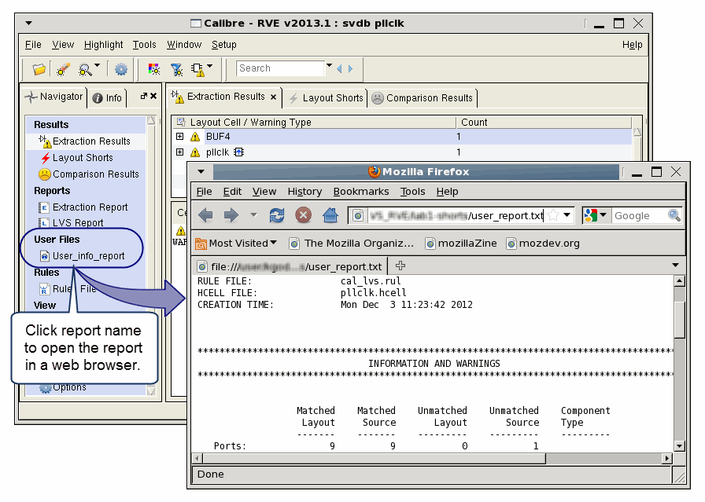

If your Calibre
run creates a custom text or HTML-formatted report, you can create
a link to the custom report in the Navigator Pane of Calibre RVE
for LVS, PERC, or PEX. The link is shown in a section titled “User
Files”, and the custom report is opened in a web browser or a text
tab within Calibre RVE.
Add one or more of the following statements
to the svdb/topcell.extf
file, where svdb is
the Standard Verification Database created by the run, and topcell is
the primary cell of the design.
To open the report in a web browser:
lvs_ExtLinkFile ReportName path_to_report
To open the report in a text report
tab within Calibre RVE:
lvs_ExtOutFile ReportName path_to_report
where ReportName is
how the report is listed in the Navigator pane, and path_to_report is
the path to the report file. The links are listed in the Navigator
Pane in the order in which they appear in the svdb/topcell.extf
file.
When using lvs_ExtOutFile, the ReportName should
not be any of the following:
DFM_RDBS
|
PATHCHK_NET_FILES
|
ERC_DATABASE
|
PATHCHK_POLY_FILES
|
ERC_PATHCHK_DATABASE
|
RULES_FILE
|
ERC_PATHCHK_REPORT
|
RUNDIR
|
ERC_SUMMARY
|
SEED_PROMOTION_DATABASE
|
EXTRACTION_REPORT
|
SHORTS_DATABASE
|
LAYOUT_NETLIST
|
SOFTCHK_DATABASE
|
OTHER_RDBS
|
WAIVER_RDBS
|
OTHER_REPORTS
|
|
Because the svdb/topcell.extf
file is regenerated each time Calibre runs, you should create a
post-execution script or Calibre Interactive trigger to append the
lvs_ExtLinkFile statement to the svdb/topcell.extf
file after the Calibre run.
Prerequisites
A
user report in a format that can be opened in a web browser
Using
Calibre RVE for LVS, PERC, or PEX
Video
The video “How to Add Links to Custom Reports in Calibre RVE
for LVS and PERC” uses both a shell script and a Calibre Interactive
post-execution trigger to add report links.
Procedure
Note: This procedure uses a Calibre
Interactive post-execution trigger to add the lvs_ExtLinkFile statement
to the svdb/topcell.extf
file. If you do not use Calibre Interactive, you can do the same
with a shell script that runs after Calibre finishes.
Assume that a custom report
named user_report.txt is created in the run
directory after the Calibre run finishes.
Create the following shell
script in the run directory:#!/bin/sh
# takes one argument, the top cell name
# add line break, then user report statement
echo " " >> ./svdb/$1.extf
echo "lvs_ExtLinkFile User_info_report user_report.txt" >> ./svdb/$1.extf
If you want the report to open
in a text tab within Calibre RVE rather than a web browser, use
the lvs_ExtOutFile statement instead. See “Highlighting Using Text Selection in Calibre RVE for LVS and Calibre RVE for PERC” for information on highlighting
from a text file.
- Save the file as add_report and
make it executable.
- Start Calibre Interactive
nmLVS, PERC, or PEX, and load a runset if you have one.
- Choose Setup > Preferences to open
the Calibre Interactive Setup Preferences dialog box; see “Setup Preferences”
in the Calibre Interactive User’s Manual
for more information.
- Click the Triggers tab.
- Enter the following in the
text field for Calibre Post-Execution Trigger:
add_report %L
Here %L is a trigger parameter
that is replaced with the name of the top cell. See “Internal Triggers in Calibre Interactive” in the Calibre Interactive User’s Manual for
more information.
- Click OK to
close the Setup Preferences dialog box.
- Start the run in Calibre Interactive.
- After the run completes, start
Calibre RVE and open the results database.
The link to the report is shown
in a section titled “User Files” in the Navigator, as shown in Figure 1.
Figure 1. Link to Custom Report
in Calibre RVE for LVS